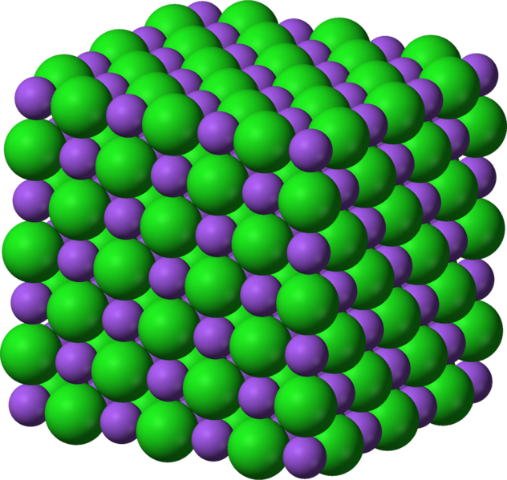

Estructuras
 Antes de estudiar los diferentes tipos de enlaces debemos saber que la unión de átomos mediante enlace químico puede dar lugar a diferentes estructuras:
Antes de estudiar los diferentes tipos de enlaces debemos saber que la unión de átomos mediante enlace químico puede dar lugar a diferentes estructuras:
- Moléculas
- Redes cristalinas
Los átomos que se unen para formar la molécula o la red cristalina pueden ser:
Mismo elemento
Se forma una molécula o cristal de un elemento. Por ejemplo:
La molécula del elemento Oxígeno, O2, que esta formada por la unión de dos átomos de oxígeno.
El cristal de diamante, formado por átomos de Carbono (C).
Diferentes elementos
Se forma una molécula o cristal de un compuesto. Por ejemplo:
La molécula de agua H2O formada por átomos de oxígeno y de hidrógeno.
El cristal de sal común, NaCl, formado por sodio y cloro.

Benjah-bmm27 (Vía Wikimedia). Cristal de cloruro de sodio (CC0)
Ahora vamos a hacer algunas actividades para ver si tenemos estos conceptos claros.
Átomos, moléculas y cristales
¿Sustancia simple o compuesto?
Intenta descubrir en cada una de las tarjetas de qué se trata.
Intenta descubrir en cada una de las tarjetas de qué se trata.
","showMinimize":false,"itinerary":{"showClue":false,"clueGame":"","percentageClue":40,"showCodeAccess":false,"codeAccess":"","messageCodeAccess":""},"cardsGame":[{"url":"../content/resources/20250613125415KMKBKP/Iron_electrolytic_and_1cm3_cube.jpg","x":0,"y":0,"author":"","alt":"","audio":"","color":"#000000","backcolor":"#ffffff","eText":"Fe","urlBk":"","xBk":0,"yBk":0,"authorBk":"","altBk":"","audioBk":"","colorBk":"#000000","backcolorBk":"#ffffff","eTextBk":"Sustancia%20simple%20(Hierro)"},{"url":"../content/resources/20250613125415KMKBKP/Ammonia-3D-balls-A.1.png","x":0,"y":0,"author":"","alt":"","audio":"","color":"#000000","backcolor":"#ffffff","eText":"","urlBk":"","xBk":0,"yBk":0,"authorBk":"","altBk":"","audioBk":"","colorBk":"#000000","backcolorBk":"#ffffff","eTextBk":"Compuesto%20(Amoniaco)"},{"url":"../content/resources/20250613125415KMKBKP/Ozone-3D-vdW.png","x":0,"y":0,"author":"","alt":"","audio":"","color":"#000000","backcolor":"#ffffff","eText":"","urlBk":"","xBk":0,"yBk":0,"authorBk":"","altBk":"","audioBk":"","colorBk":"#000000","backcolorBk":"#ffffff","eTextBk":"Sustancia%20simple%20(Ozono)"},{"url":"../content/resources/20250613125415KMKBKP/Glucose_ball-and-stick.svg.png","x":0,"y":0,"author":"","alt":"","audio":"","color":"#000000","backcolor":"#ffffff","eText":"","urlBk":"","xBk":0,"yBk":0,"authorBk":"","altBk":"","audioBk":"","colorBk":"#000000","backcolorBk":"#ffffff","eTextBk":"Compuesto%20(Glucosa)"},{"url":"../content/resources/20250613125415KMKBKP/White_phosphorus_molecule.jpg","x":0,"y":0,"author":"","alt":"","audio":"","color":"#000000","backcolor":"#ffffff","eText":"","urlBk":"","xBk":0,"yBk":0,"authorBk":"","altBk":"","audioBk":"","colorBk":"#000000","backcolorBk":"#ffffff","eTextBk":"Sustancia%20simple%20(Tetraf%C3%B3sforo)"},{"url":"../content/resources/20250613125415KMKBKP/Sodium-chloride-unit-cell-3D-ionic.png","x":0,"y":0,"author":"","alt":"","audio":"","color":"#000000","backcolor":"#ffffff","eText":"","urlBk":"","xBk":0,"yBk":0,"authorBk":"","altBk":"","audioBk":"","colorBk":"#000000","backcolorBk":"#ffffff","eTextBk":"Compuesto%20(Cloruro%20de%20Sodio)"},{"url":"../content/resources/20250613125415KMKBKP/Bromine-3D-balls.png","x":0,"y":0,"author":"","alt":"","audio":"","color":"#000000","backcolor":"#ffffff","eText":"","urlBk":"","xBk":0,"yBk":0,"authorBk":"","altBk":"","audioBk":"","colorBk":"#000000","backcolorBk":"#ffffff","eTextBk":"Sustancia%20simple%20(Bromo)"}],"isScorm":0,"textButtonScorm":"Guardar la puntuación","repeatActivity":false,"textAfter":"%3Cp%20style%3D%22text-align%3A%20center%3B%22%3E%3Cspan%20style%3D%22font-size%3A%2012pt%3B%22%3ETodas%20las%20im%E1genes%20de%20las%20tarjetas%20anteriores%20son%20de%20Wikimedia%20Commons%20con%20licencias%20abiertas%20%28CC-0%2C%20CC-By-SA%29%3C/span%3E%3C/p%3E","version":1.3,"percentajeCards":100,"type":0,"showSolution":true,"timeShowSolution":3,"time":3,"evaluation":false,"evaluationID":"","id":"202541462436-120","msgs":{"msgSubmit":"Enviar","msgClue":"¡Genial! La pista es:","msgCodeAccess":"Código de acceso","msgPlayAgain":"Jugar otra vez","msgPlayStart":"Pulse aquí para jugar","msgScore":"Puntuación","msgErrors":"Errores","msgHits":"Aciertos","msgMinimize":"Minimizar","msgMaximize":"Maximizar","msgCool":"¡Bien!","msgFullScreen":"Pantalla Completa","msgExitFullScreen":"Salir del modo pantalla completa","msgSuccesses":"¡Correcto! | ¡Excelente! | ¡Genial! | ¡Muy bien! | ¡Perfecto!","msgFailures":"¡No era eso! | ¡Incorrecto! | ¡No es correcto! | ¡Lo sentimos! | ¡Error!","msgNoImage":"Pregunta sin imágenes","msgEndGameScore":"Antes de guardar la puntuación comience la partida.","msgScoreScorm":"La puntuación no se puede guardar porque esta página no forma parte de un paquete SCORM.","msgOnlySaveScore":"¡Sólo puede guardar la puntuación una vez!","msgOnlySave":"Sólo puede guardar una vez","msgInformation":"Información","msgYouScore":"Su puntuación","msgAuthor":"Autoría","msgOnlySaveAuto":"Su puntuación se guardará después de cada pregunta. Sólo puede jugar una vez.","msgSaveAuto":"Su puntuación se guardará automáticamente después de cada pregunta.","msgSeveralScore":"Puede guardar la puntuación tantas veces como quiera","msgYouLastScore":"La última puntuación guardada es","msgActityComply":"Ya ha realizado esta actividad.","msgPlaySeveralTimes":"Puede realizar esta actividad cuantas veces quiera","msgClose":"Cerrar","msgAudio":"Audio","msgPreviousCard":"Anterior","msgNextCard":"Siguiente","msgNumQuestions":"Número de tarjetas","msgTrue":"Verdadero","msgFalse":"Falso","msgTryAgain":"Necesita al menos un %s% de respuestas correctas para conseguir la información. Vuelva a intentarlo.","mgsAllQuestions":"¡Completadas las preguntas!","msgTrue1":"Has acertado. Es la cara correcta.","msgTrue2":"Has fallado. No es la cara correcta.","msgFalse1":"Has acertado. No es la cara correcta.","msgFalse2":"Has fallado. Es la cara correcta.","mgsClickCard":"Pulsa en la tarjeta","msgEndTime":"Acabó el tiempo de juego. Tu puntuación es %s.","msgEnd":"Finalizar","msgEndGameM":"Has completado el juego. Tu puntuación es %s.","msgUncompletedActivity":"Actividad no completada","msgSuccessfulActivity":"Actividad superada. Puntuación: %s","msgUnsuccessfulActivity":"Actividad no superada. Puntuación: %s","msgTypeGame":"Tarjetas de memoria"}}{kind=link}
{kind=link}
{kind=link}
{kind=link}
{kind=link}
{kind=link}
{kind=link}
Todas las imágenes de las tarjetas anteriores son de Wikimedia Commons con licencias abiertas (CC-0, CC-By-SA)